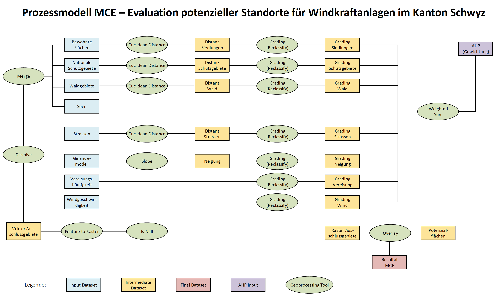
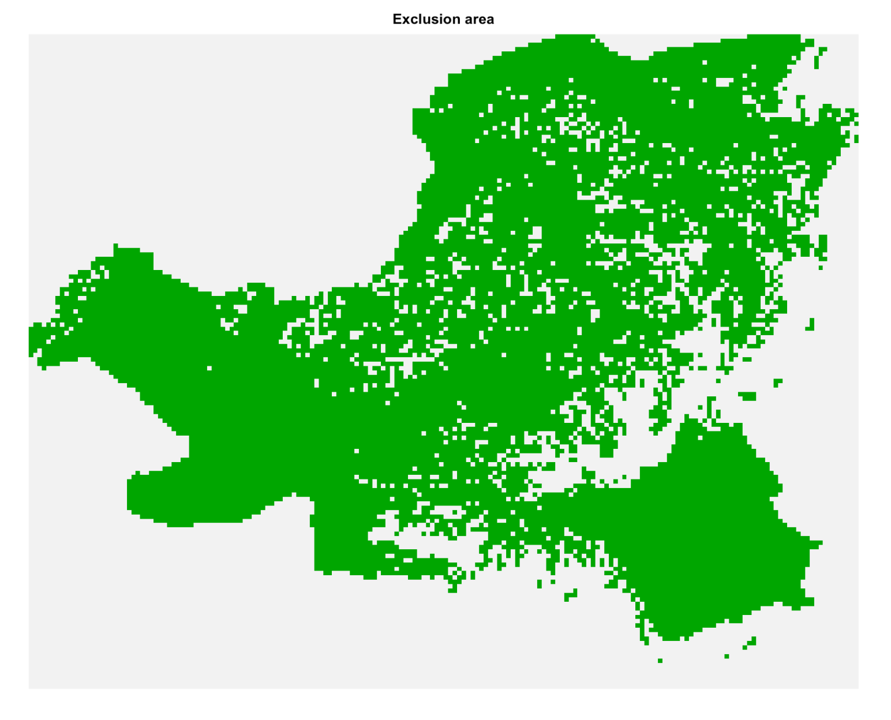
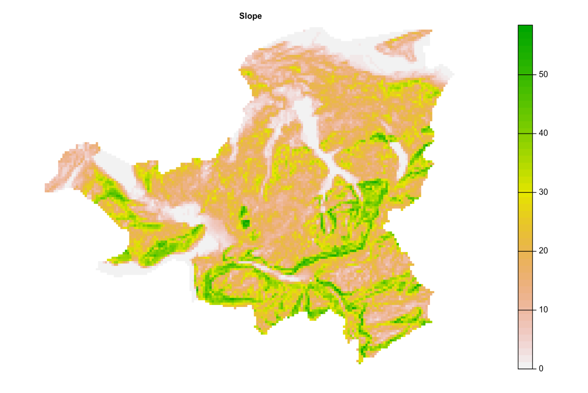
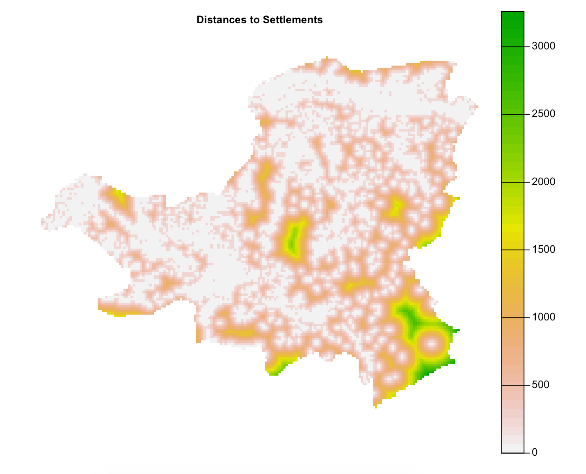
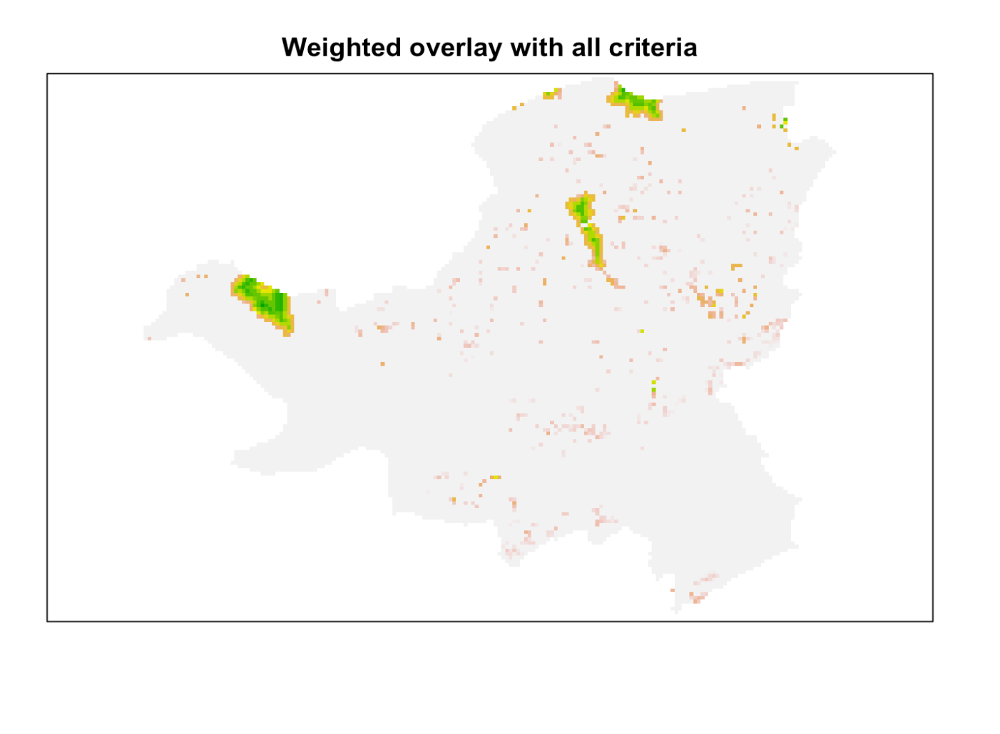
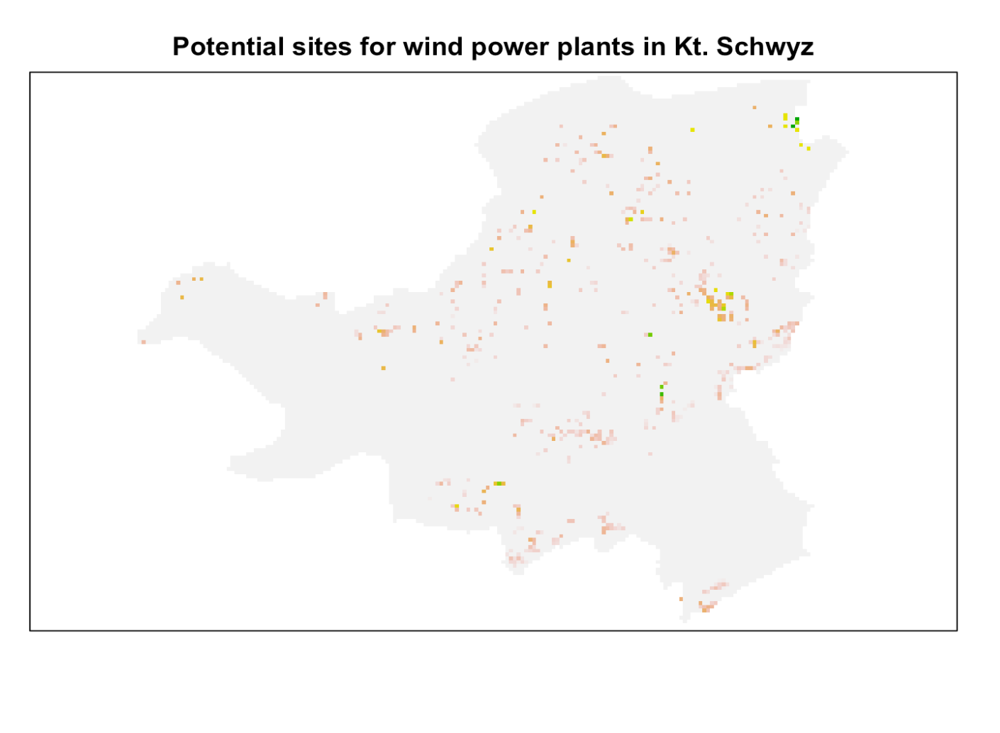

Die folgende Übung mag einigen von Ihnen bekannt vorkommen, wenn Sie unseren Bachelorstudiengang besucht haben. Dieses MCE wurde bereits im Bachelormodul “GIS” unter Verwendung von ArcGIS Pro und dessen ModelBuilder durchgeführt (siehe Abbildung 48.1).

Abbildung 48.1: MCE Prozess
Das Ziel dieser Übung ist es, das gleiche MCE nur mit R durchzuführen. Wir werden hauptsächlich Funktionen aus den R-Paketen sf und raster verwenden. Bitte schauen Sie sich das Prozessmodell (siehe Abbildung 48.1) an, das in ArcGIS Pro erstellt wurde, und versuchen Sie herauszufinden, welche Funktionen in den beiden R-Paketen denen im Modell entsprechen. Sie werden sehen, dass es einige ähnliche Funktionen gibt, aber für einige Berechnungen ist ein anderer Ansatz erforderlich.
Übungen 1: Daten laden und anzeigen
Laden Sie die nachfolgenden Rasterdatensätze herunter:
Laden Sie das File windkraft_geodata.gpkg von Moodle herunter. Dieses beinhaltet die folgenden Layers:
Layer
Koord. System
Beschreibung
Typ
Ausschlussgebiet
Bewohnte_Flaeche
CH1903/LV03
Siedlungen (inkl. Puffer 200m)
Polygon
(Ja)/Distanz
Nationale_Schutzgebiete
CH1903/LV03
Nationale Schutzgebiete
Polygon
(Ja)/Distanz
Seeflaechen
CH1903/LV03
Seegebiete
Polygon
Ja
Strassen
CH1903/LV03
Strassen
Linie
Nein/Distanz
Untersuchungsgebiet_Schwyz
CH1903/LV03
Untersuchungsgebiet, Kanton Schwyz
Polygon
Nein
Waldgebiete
CH1903/LV03
Waldgebiete
Polygon
(Ja)/Distanz
Die Rasterdaten können mit der Funktion terra::rast und die Vektorebenen mit sf::read_sf geladen werden. Zeigen Sie die verfügbaren Layers an und plotten Sie sie auf ansprechende Weise. Zur Visualisierung können Sie die Funktionen plot für Rasterdaten und ggplot für Vektordaten verwenden.
Wir werden die folgenden Pakete in dieser Übung verwenden:
Führen Sie die Ausschlusskriterien Siedlungsgebiete, nationale Schutzgebiete, Seeflächen und Waldgebiete zusammen. Diese Vektordatensätze sind als Data Frames strukturiert und können daher durch einfaches Kombinieren zusammengeführt werden. Beachten Sie dabei, dass die Data Frames unterschiedliche Grössen haben. Zusätzlich müssen wir aus dem neu erstellten Vektordatensatz (Ausschlussgebiet) ein Raster erstellen. Dazu können Sie die Funktion rasterize verwenden. Die Ausgabe soll ein Raster mit 0 und 1 sein, wobei die Felder des Ausschlussbereichs den Wert 0 und die restlichen Felder den Wert 1 haben (siehe Abbildung 48.2).
Tipp: Um ein Raster mit nur 0 und 1 zu erhalten, verwenden Sie die Optionen “rasterize” field = 0 und background = 1.
Tipp: Um Vektordaten zu rastern, müssen Sie vorher ein leeres Raster erstellen. Dieses Raster sollte die gleichen Grenzen (extent), die gleiche Auflösung und das gleiche Koordinatensystem (crs) haben wie die anderen Rastersätze. Verwenden Sie dazu den folgenden Code.*
r <- terra::rast(ext(kt_schwyz), resolution =c(250, 250), crs ="EPSG:21781")

Abbildung 48.2: Ausschlussgebiete
Übung 3: Neigung berechnen
Als nächstes berechnen Sie die Neigung in Grad auf der Grundlage des Geländemodells (dhm25m). Das terra-Paket bietet Ihnen eine sehr hilfreiche Funktion namens terrain.
Tipp: Wenn Sie die Terrain-Funktion verwenden, benutzen Sie die folgenden Optionen: v=“slope”, unit=“degrees”, neighbors=8.*

Übung 4: Entfernungen zu Kriterien berechnen
Bei der Bewertung geeigneter Standorte für Windkraftanlagen ist die Entfernung zu Strassen, Waldgebieten, nationalen Schutzgebieten und bewohnten Gebieten relevant. Je nach Kriterium hat eine geringe oder grosse Entfernung einen positiven Einfluss auf die Bewertung der potenziellen Standorte. Führen Sie zu diesem Zweck eine Abstandsanalyse mit den ausgewählten Kriterien-Rasterlayern durch. Verwenden Sie für diese Berechnung die Rasterfunktion distance.
Tipp: Um die Funktion distance durchführen zu können, müssen Sie die Kriterien ebenfalls “rastern”. Sie können den gleichen Befehl wie in Übung 2 verwenden, aber nur mit der Option field = 1.
Tipp: Verwenden Sie erneut die Funktion “Zuschneiden”, um nur relevante Daten aus dem Untersuchungsgebiet zu erhalten.

Übung 5: Kriterien standardisieren und bewerten (grading)
Die Datenebenen Neigung, Windgeschwindigkeit, Vereisungshäufigkeit und die in Übung 4 berechneten Entfernungsebenen haben unterschiedliche Einheiten (dm/s, Grad, d/yr und m). Diese Einheiten können nicht direkt miteinander verrechnet werden. Daher müssen die verschiedenen Ebenen durch eine lineare Abstufung operationalisiert werden. Die lineare Abstufung wird mit der Funktion reclassify durchgeführt. Verwenden Sie die Standards für die Neuklassifizierung aus Abbildung 48.3 (a) und Abbildung 48.3 (b)).
Tipp: Beachten Sie die Minimal- und Maximalwerte der einzelnen Rasterebenen.
Tipp: Hier ist ein Beispielcode zur Neuklassifizierung der Entfernungen zu Siedlungen.
Führen Sie einen AHP durch, um die Kriterien zu gewichten, die dem MCE zugrunde liegen. Vergleichen Sie zunächst die Kriterien paarweise und berechnen Sie dann die Gewichte - wie Sie es in der letzten Woche gelernt haben. Am Ende sollten Sie eine Liste mit 7 Gewichten erhalten, wie unten dargestellt.
Tipp: Sehen Sie sich die Übungen 2 und 3 aus der letzten Woche an. Verwenden Sie den vorbereiteten R-Code, um Ihre ahp-Matrix zu erstellen.
Die linear gewichteten Kriterien (Übung 5) sollen nun unter Berücksichtigung der mit dem AHP ermittelten Gewichtung (Übung 6) miteinander kombiniert werden. Diese gewichtete Überlagerung kann mit Hilfe von Rasterberechnungen durchgeführt werden, indem einfach jedes Kriterium mit seinem Gewicht multipliziert und addiert wird (siehe Abbildung 48.4).
Tipp: Da die Rastersätze leicht unterschiedliche Ursprünge haben, erhöhen Sie die Toleranz, indem Sie rasterOptions(tolerance = 0.5) verwenden.
Tipp: Achten Sie bei der Multiplikation auch auf die Reihenfolge der Gewichte in Ihrer Liste.

Abbildung 48.4: Gewichteter Overlay
Übung 8: Potenzielle Gebiete mit Ausschlusskriterien überschneiden
Durch einfache Multiplikation des Ausschluss-Layers (Ergebnis aus Übung 2) mit dem gewichteten Overlay-Layer (Ergebnis aus Übung 7) schliessen wir alle Flächen mit dem Wert 0 (Ausschlussflächen) aus und behalten alle anderen Flächen mit dem Wert 1 (z.B. 0x3=0, 1x3=3). Erstellen Sie als Abschluss der Studie eine endgültige Darstellung der Potenzialflächen für Windkraftanlagen im Kanton Schwyz (wie Abbildung 48.5). Diskutieren Sie die Ergebnisse und bestimmen Sie drei mögliche Standorte, an denen eine konkrete Planung von Windkraftanlagen möglich wäre.

Abbildung 48.5: Potenzielle Standorte
Quellcode
---date: 2022-12-12lesson: RaumAn5thema: Multi-Criteria Evaluation (MCE)index: 1---# Rauman 5: ÜbungDie folgende Übung mag einigen von Ihnen bekannt vorkommen, wenn Sie unseren Bachelorstudiengang besucht haben. Dieses MCE wurde bereits im Bachelormodul "GIS" unter Verwendung von ArcGIS Pro und dessen ModelBuilder durchgeführt (siehe @fig-mce-process).{#fig-mce-process}Das Ziel dieser Übung ist es, das gleiche MCE nur mit R durchzuführen. Wir werden hauptsächlich Funktionen aus den R-Paketen [sf](https://cran.r-project.org/web/packages/sf/sf.pdf) und [raster](https://cran.r-project.org/web/packages/raster/raster.pdf) verwenden. Bitte schauen Sie sich das Prozessmodell (siehe @fig-mce-process) an, das in ArcGIS Pro erstellt wurde, und versuchen Sie herauszufinden, welche Funktionen in den beiden R-Paketen denen im Modell entsprechen. Sie werden sehen, dass es einige ähnliche Funktionen gibt, aber für einige Berechnungen ist ein anderer Ansatz erforderlich.## Übungen 1: Daten laden und anzeigenLaden Sie die nachfolgenden Rasterdatensätze herunter:| Layer | Koord. System | Beschreibung | Typ | Ausschlussgebiet | |:---|:---|:---|:---|:---|| [dhm25m.tif](https://moodle.zhaw.ch/mod/resource/view.php?id=602285) | CH1903/LV03 | Geländemodell (m) | Raster (25m) | Nein || [eis25m.tif](https://moodle.zhaw.ch/mod/resource/view.php?id=602288) | CH1903/LV03 | Häufigkeit der Vereisung (Tage/Jahr) | Raster (25m) | Nein || [wind25m.tif](https://moodle.zhaw.ch/mod/resource/view.php?id=602297) | CH1903/LV03 | Durchschnittliche Windgeschwindigkeit (dm/s) | Raster (25m) | Nein |Laden Sie das File [windkraft_geodata.gpkg](https://moodle.zhaw.ch/mod/resource/view.php?id=663498) von Moodle herunter. Dieses beinhaltet die folgenden Layers:| Layer | Koord. System | Beschreibung | Typ | Ausschlussgebiet ||:---|:---|:---|:---|:---|| Bewohnte_Flaeche| CH1903/LV03 | Siedlungen (inkl. Puffer 200m) | Polygon | (Ja)/Distanz || Nationale_Schutzgebiete | CH1903/LV03 | Nationale Schutzgebiete| Polygon | (Ja)/Distanz || Seeflaechen | CH1903/LV03 | Seegebiete | Polygon | Ja || Strassen | CH1903/LV03 | Strassen | Linie | Nein/Distanz || Untersuchungsgebiet_Schwyz | CH1903/LV03 | Untersuchungsgebiet, Kanton Schwyz | Polygon | Nein || Waldgebiete | CH1903/LV03 | Waldgebiete | Polygon | (Ja)/Distanz |Die Rasterdaten können mit der Funktion `terra::rast` und die Vektorebenen mit `sf::read_sf` geladen werden. Zeigen Sie die verfügbaren Layers an und plotten Sie sie auf ansprechende Weise. Zur Visualisierung können Sie die Funktionen `plot` für Rasterdaten und `ggplot` für Vektordaten verwenden.<!-- Einige Datensätze überschreiten die Grenzen des Untersuchungsgebiets. Verwenden Sie die Funktion `crop` für Rasterdatensätze und `st_intersection` für sf/Vektor-Daten, um die relevanten Bereiche zu extrahieren. -->Wir werden die folgenden Pakete in dieser Übung verwenden:```{r}library(sf)library(terra)library(dplyr)library(tmap)``````{r}#| echo: false#| include: false#Vector datast_layers("datasets/rauman/windkraft_geodata.gpkg")kt_schwyz <-read_sf("datasets/rauman/windkraft_geodata.gpkg", "Untersuchungsgebiet_Schwyz")settlements <-read_sf("datasets/rauman/windkraft_geodata.gpkg", "Bewohnte_Flaeche")forests <-read_sf("datasets/rauman/windkraft_geodata.gpkg", "Waldgebiete")protected_areas <-read_sf("datasets/rauman/windkraft_geodata.gpkg", "Nationale_Schutzgebiete")lakes <-read_sf("datasets/rauman/windkraft_geodata.gpkg", "Seeflaechen")streets <-read_sf("datasets/rauman/windkraft_geodata.gpkg", "Strassen") |>st_intersection(kt_schwyz) #intersect with study area#Raster dataeis25m <-rast("datasets/rauman/eis25m.tif")dhm25m <-rast("datasets/rauman/dhm25m.tif")wind25m <-rast("datasets/rauman/wind25m.tif")``````{r}#| include: false#Plot vector datatm_shape(lakes) +tm_polygons(col ="dodgerblue3") +tm_shape(streets) +tm_lines(col ="gray18") +tm_shape(forests) +tm_polygons(col ="darkseagreen4", alpha =0.5) +tm_shape(settlements) +tm_polygons(col ="gray",alpha =0.5)``````{r}#| include: falsetm_shape(dhm25m) +tm_raster(style ="cont") +tm_shape(kt_schwyz) +tm_borders()tm_shape(eis25m) +tm_raster(style ="cont") +tm_shape(kt_schwyz) +tm_borders()tm_shape(wind25m) +tm_raster(style ="cont") +tm_shape(kt_schwyz) +tm_borders()```## Übung 2: Ausschlusskriterien zusammenführenFühren Sie die Ausschlusskriterien Siedlungsgebiete, nationale Schutzgebiete, Seeflächen und Waldgebiete zusammen. Diese Vektordatensätze sind als Data Frames strukturiert und können daher durch einfaches Kombinieren zusammengeführt werden. Beachten Sie dabei, dass die Data Frames unterschiedliche Grössen haben. Zusätzlich müssen wir aus dem neu erstellten Vektordatensatz (Ausschlussgebiet) ein Raster erstellen. Dazu können Sie die Funktion `rasterize` verwenden. Die Ausgabe soll ein Raster mit 0 und 1 sein, wobei die Felder des Ausschlussbereichs den Wert 0 und die restlichen Felder den Wert 1 haben (siehe @fig-exclusion-areas).* **Tipp**: Um ein Raster mit nur 0 und 1 zu erhalten, verwenden Sie die Optionen "rasterize" field = 0 und background = 1.* **Tipp**: Um Vektordaten zu rastern, müssen Sie vorher ein leeres Raster erstellen. Dieses Raster sollte die gleichen Grenzen (extent), die gleiche Auflösung und das gleiche Koordinatensystem (crs) haben wie die anderen Rastersätze. Verwenden Sie dazu den folgenden Code.*```{r}r <- terra::rast(ext(kt_schwyz), resolution =c(250, 250), crs ="EPSG:21781")```{#fig-exclusion-areas width=50%}```{r}#| echo: false#| include: false#Merge exclusion areaexclusion_areas <- dplyr::bind_rows(settlements, forests, protected_areas, lakes)#create rasterr <- terra::rast(ext(kt_schwyz), resolution =c(250, 250), crs ="EPSG:21781")raster_exclusion_areas <-rasterize(vect(exclusion_areas), r,field =0, background =1) |>crop(kt_schwyz)plot(raster_exclusion_areas, main="Exclusion area", axes=FALSE, legend=FALSE, col=terrain.colors(2))```## Übung 3: Neigung berechnenAls nächstes berechnen Sie die Neigung in Grad auf der Grundlage des Geländemodells (dhm25m). Das terra-Paket bietet Ihnen eine sehr hilfreiche Funktion namens `terrain`. * **Tipp**: Wenn Sie die Terrain-Funktion verwenden, benutzen Sie die folgenden Optionen: v="slope", unit="degrees", neighbors=8.*{width=50%}```{r}#| echo: false#| include: falseslope <- terra::terrain(dhm25m, v="slope",unit="degrees", neighbors=8)slope_250 <- slope |>aggregate(fact =10)plot(slope_250, main="Slope", axes=FALSE)```## Übung 4: Entfernungen zu Kriterien berechnenBei der Bewertung geeigneter Standorte für Windkraftanlagen ist die Entfernung zu Strassen, Waldgebieten, nationalen Schutzgebieten und bewohnten Gebieten relevant. Je nach Kriterium hat eine geringe oder grosse Entfernung einen positiven Einfluss auf die Bewertung der potenziellen Standorte. Führen Sie zu diesem Zweck eine Abstandsanalyse mit den ausgewählten Kriterien-Rasterlayern durch. Verwenden Sie für diese Berechnung die Rasterfunktion `distance`. * **Tipp**: Um die Funktion `distance` durchführen zu können, müssen Sie die Kriterien ebenfalls "rastern". Sie können den gleichen Befehl wie in Übung 2 verwenden, aber nur mit der Option field = 1.* **Tipp**: Verwenden Sie erneut die Funktion "Zuschneiden", um nur relevante Daten aus dem Untersuchungsgebiet zu erhalten.{width=50%}```{r}#| echo: false#| include: false#create raster layers from vector raster_settlements <- terra::rasterize(vect(settlements), r, field =1)raster_protected_areas <- terra::rasterize(vect(protected_areas), r, field =1) raster_forests <- terra::rasterize(vect(forests), r, field =1) raster_streets <- terra::rasterize(vect(streets$geom), r, field =1)#calculate euclidean distancessettlements_ed <-distance(raster_settlements) |> raster::raster() |> raster::mask(kt_schwyz) |> terra::rast()protected_areas_ed <-distance(raster_protected_areas) |> raster::raster() |> raster::mask(kt_schwyz) |> terra::rast()forests_ed <-distance(raster_forests) |> raster::raster() |> raster::mask(kt_schwyz) |> terra::rast()streets_ed <-distance(raster_streets) |> raster::raster() |> raster::mask(kt_schwyz) |> terra::rast()```## Übung 5: Kriterien standardisieren und bewerten (grading)Die Datenebenen Neigung, Windgeschwindigkeit, Vereisungshäufigkeit und die in Übung 4 berechneten Entfernungsebenen haben unterschiedliche Einheiten (dm/s, Grad, d/yr und m). Diese Einheiten können nicht direkt miteinander verrechnet werden. Daher müssen die verschiedenen Ebenen durch eine lineare Abstufung operationalisiert werden. Die lineare Abstufung wird mit der Funktion `reclassify` durchgeführt. Verwenden Sie die Standards für die Neuklassifizierung aus @fig-mce-reclassify-1 und @fig-mce-reclassify-2).* **Tipp**: Beachten Sie die Minimal- und Maximalwerte der einzelnen Rasterebenen.* **Tipp**: Hier ist ein Beispielcode zur Neuklassifizierung der Entfernungen zu Siedlungen.```{r}settlements_max <-minmax(settlements_ed)[2]reclass_settlements <-c(0,80,0,80,160,0.1,160,240,0.2,240,320,0.3,320,400,0.4,400,480,0.5,480,560,0.6,560,640,0.7,640,720,0.8,720,800,0.9,800,settlements_max,1.0) |>matrix(ncol =3, byrow =TRUE)reclass_settlements_ed <- terra::classify(settlements_ed, reclass_settlements)```::: {#fig-mce-reclassify layout-ncol=2}{#fig-mce-reclassify-1}{#fig-mce-reclassify-2}MCE Reclassify:::{width=50%}```{r}#| echo: false#| include: false#### reclassify windwind250m <- wind25m |>aggregate(fact =10)wind_max <-minmax(wind250m)[2]reclass_wind_m <-c(0,35,0,35,40,0.1,40,45,0.2,45,50,0.3,50,55,0.4,55,60,0.5,60,65,0.6,65,70,0.7,70,75,0.8,75,wind_max,0.9) |>matrix(ncol =3, byrow =TRUE)reclass_wind <-classify(wind250m, reclass_wind_m)plot(reclass_wind, main="Average wind speed (reclassified)", axes=FALSE)#### reclassify ice eis250m <- eis25m |>aggregate(fact =10) ## lowering the resolutioneis_max <-minmax(eis250m)[2]reclass_ice_m <-c(0,6,1,6,12,0.9,12,18,0.8,18,24,0.7,24,30,0.6,30,36,0.5,36,eis_max,0.4) |>matrix(ncol =3, byrow =TRUE)reclass_ice <-classify(eis250m, reclass_ice_m)plot(reclass_ice, main="Icing frequency (reclassified)", axes=FALSE)#### reclassify slopeslope250m <- slope |>aggregate(fact =10) ## lowering the resolutionslope_max <-minmax(slope250m)[2]reclass_slope_m <-c(0,2,1,2,4,0.9,4,6,0.8,6,8,0.7,8,10,0.6,10,12,0.5,12,14,0.4,14,16,0.3,16,18,0.2,18,20,0.1,20,slope_max,0) |>matrix(ncol =3, byrow =TRUE)reclass_slope <-classify(slope250m, reclass_slope_m)plot(reclass_slope, main="Slope (reclassified)", axes=FALSE)#### reclassify settlements settlements_max <-minmax(settlements_ed)[2]reclass_settlements <-c(0,80,0,80,160,0.1,160,240,0.2,240,320,0.3,320,400,0.4,400,480,0.5,480,560,0.6,560,640,0.7,640,720,0.8,720,800,0.9,800,settlements_max,1.0) |>matrix(ncol =3, byrow =TRUE)reclass_settlements_ed <-classify(settlements_ed, reclass_settlements)plot(reclass_settlements_ed, main="Distance to settlements (reclassified)", axes=FALSE)#### reclassify protected areasprotected_areas_max <-minmax(protected_areas_ed)[2]reclass_protected_areas <-c(0,50,0,50,100,0.1,100,150,0.2,150,200,0.3,200,250,0.4,250,300,0.5,300,350,0.6,350,400,0.7,400,450,0.8,450,500,0.9,500,protected_areas_max,1.0) |>matrix(ncol =3, byrow =TRUE)reclass_protected_areas_ed <-classify(protected_areas_ed, reclass_protected_areas)plot(reclass_protected_areas_ed, main="Distance to protected areas (reclassified)", axes=FALSE)#### reclassify forest area forests_max <-minmax(forests_ed)[2]reclass_forests <-c(0,10,0,10,20,0.1,20,30,0.2,30,40,0.3,40,50,0.4,50,60,0.5,60,70,0.6,70,80,0.7,80,90,0.8,90,100,0.9,100,forests_max,1.0) |>matrix(ncol =3, byrow =TRUE)reclass_forests_ed <-classify(forests_ed, reclass_forests)plot(reclass_forests_ed, main="Distance to forest areas (reclassified)", axes=FALSE)#### reclassify streets streets_max <-minmax(streets_ed)[2]reclass_streets <-c(0,250,1.0,250,500,0.9,500,750,0.8,750,1000,0.7,1000,1250,0.6,1250,1500,0.5,1500,1750,0.4,1750,2000,0.3,2000,2250,0.2,2250,2500,0.1,2500,streets_max,0) |>matrix(ncol =3, byrow =TRUE)reclass_streets_ed <-classify(streets_ed, reclass_streets)plot(reclass_streets_ed, main="Distance to streets (reclassified)", axes=FALSE)```## Übung 6: Gewichtung der Kriterien mit AHPFühren Sie einen AHP durch, um die Kriterien zu gewichten, die dem MCE zugrunde liegen. Vergleichen Sie zunächst die Kriterien paarweise und berechnen Sie dann die Gewichte - wie Sie es in der letzten Woche gelernt haben. Am Ende sollten Sie eine Liste mit 7 Gewichten erhalten, wie unten dargestellt.* **Tipp**: Sehen Sie sich die Übungen 2 und 3 aus der letzten Woche an. Verwenden Sie den vorbereiteten R-Code, um Ihre ahp-Matrix zu erstellen.| Wind | Streets | Ice | Settlements | Forest | Slope | Protected areas ||:---|:---|:---|:---|:---|:---|:---|| 0.33862692 | 0.09816760 | 0.06166626 | 0.24969460 | 0.03515759 | 0.18043000 | 0.03625702 |```{r}ahp_matrix <-c(1, 0, 0, 0, 0, 0, 0, #Wind0, 1, 0, 0, 0, 0, 0, #Distance to streets0, 0, 1, 0, 0, 0, 0, #Ice0, 0, 0, 1, 0, 0, 0, #Distance to settlements0, 0, 0, 0, 1, 0, 0, #Distance to forests0, 0, 0, 0, 0, 1, 0, #Slope0, 0, 0, 0, 0, 0, 1#Distance to protected areas) |>matrix(ncol =7, byrow =TRUE)``````{r}#| echo: false#| include: false#create AHPahp_matrix <-c(1, 6, 7, 3, 7, 4, 5, #Wind1/6, 1, 2, 1/5, 3, 1/5, 3, #Distance to streets1/7, 1/2, 1, 1/6, 2, 1/5, 2, #Ice1/3, 5, 6, 1, 5, 3, 4, #Distance to settlements1/7, 1/3, 1/2, 1/5, 1, 1/4, 1, #Distance to forests1/4, 5, 3, 1/3, 4, 1, 4, #Slope1/5, 1/3, 1/2, 1/4, 1, 1/4, 1#Distance to protected areas) |>matrix(ncol =7, byrow =TRUE)colnames(ahp_matrix) <-c("Wind", "Streets", "Ice", "Settlements", "Forest", "Slope", "Protected areas")rownames(ahp_matrix) <-c("Wind", "Streets", "Ice", "Settlements", "Forest", "Slope", "Protected areas")#Normalization of matrix & weighting of criteriaweights <-rowSums(ahp_matrix) #add row sum```## Übung 7: Gewichtetes OverlayDie linear gewichteten Kriterien (Übung 5) sollen nun unter Berücksichtigung der mit dem AHP ermittelten Gewichtung (Übung 6) miteinander kombiniert werden. Diese gewichtete Überlagerung kann mit Hilfe von Rasterberechnungen durchgeführt werden, indem einfach jedes Kriterium mit seinem Gewicht multipliziert und addiert wird (siehe @fig-weighted-overlay).* **Tipp**: Da die Rastersätze leicht unterschiedliche Ursprünge haben, erhöhen Sie die Toleranz, indem Sie rasterOptions(tolerance = 0.5) verwenden.* **Tipp**: Achten Sie bei der Multiplikation auch auf die Reihenfolge der Gewichte in Ihrer Liste.{#fig-weighted-overlay width=50%}```{r}#| echo: false#| include: false# rasterOptions(tolerance = 0.5) #raster sets have different origins, increase tolerancewind_f <- (reclass_wind * weights[1])streets_f <- (reclass_streets_ed * weights[2])eis_f <- (reclass_ice * weights[3]) settlements_f <- (reclass_settlements_ed * weights[4])forests_f <- (reclass_forests_ed * weights[5])slope_f <- (reclass_slope * weights[6])protected_areas_f <- (reclass_protected_areas_ed * weights[7])weighted_overlay <- terra::merge(streets_f,eis_f,settlements_f,forests_f, slope_f,protected_areas_f,wind_f)# Transforming all the layer from SpatRaster class to RasterLayer class, so# we can perform the raster multiplication operationstreets_R <- streets_f |> raster::raster()eis_R <- eis_f |> raster::raster()settlements_R <- settlements_f |> raster::raster()forests_R <- forests_f |> raster::raster()slope_R <- slope_f |> raster::raster()protected_areas_R <- protected_areas_f |> raster::raster()wind_R <- wind_f |> raster::raster()weighted_overlay <- streets_R*eis_R*settlements_R*forests_R*slope_R*protected_areas_R*wind_Rplot(weighted_overlay, main="Weighted overlay with all criteria", axes=FALSE, legend=F)```## Übung 8: Potenzielle Gebiete mit Ausschlusskriterien überschneidenDurch einfache Multiplikation des Ausschluss-Layers (Ergebnis aus Übung 2) mit dem gewichteten Overlay-Layer (Ergebnis aus Übung 7) schliessen wir alle Flächen mit dem Wert 0 (Ausschlussflächen) aus und behalten alle anderen Flächen mit dem Wert 1 (z.B. 0x3=0, 1x3=3). Erstellen Sie als Abschluss der Studie eine endgültige Darstellung der Potenzialflächen für Windkraftanlagen im Kanton Schwyz (wie @fig-potential-sites). Diskutieren Sie die Ergebnisse und bestimmen Sie drei mögliche Standorte, an denen eine konkrete Planung von Windkraftanlagen möglich wäre.{#fig-potential-sites}```{r}#| echo: false#| include: false# Transforming the layer depicting the exclusion areas from SpatRaster class to RasterLayer class, so we can perform the final raster multiplication operationraster_exclusion_areas <- raster_exclusion_areas |> raster::raster()final_model <- weighted_overlay * raster_exclusion_areasplot(final_model, main="Potential sites for wind power plants in Kt. Schwyz", axes=FALSE, legend=F)```